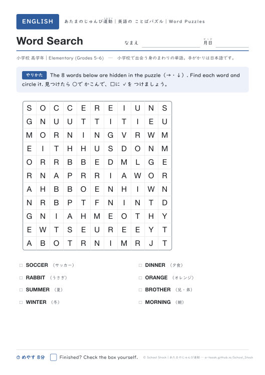
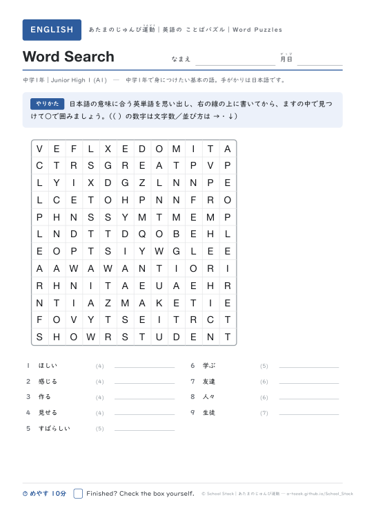
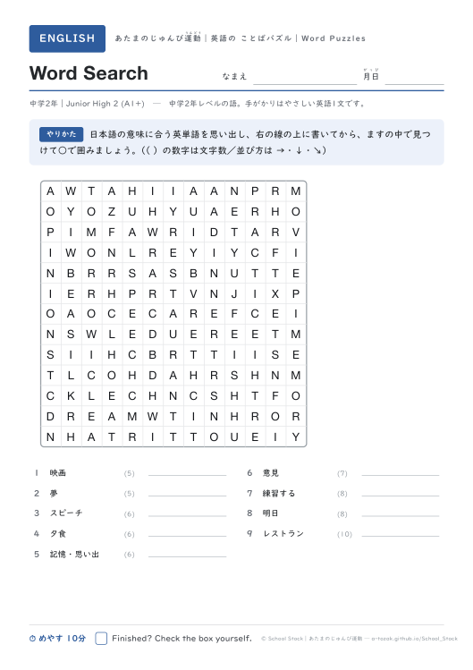
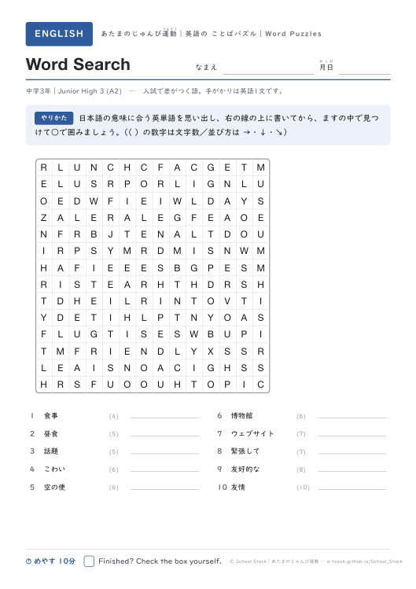
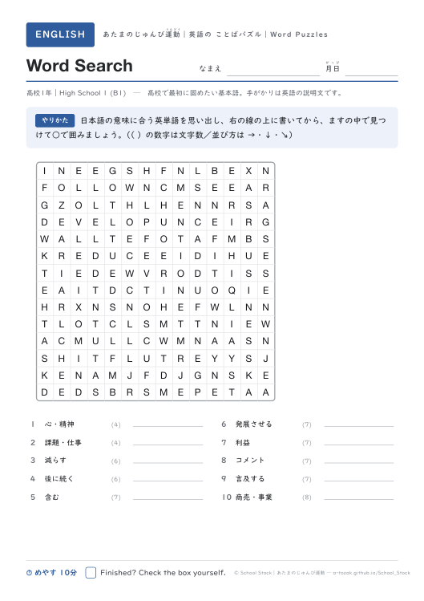
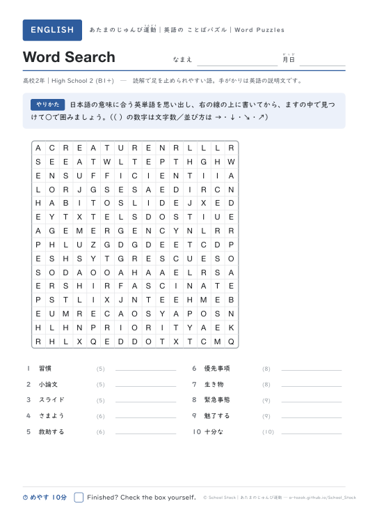
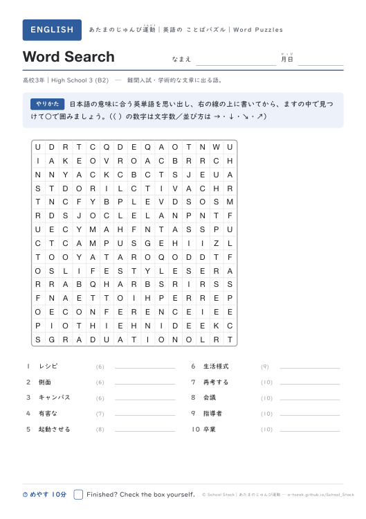
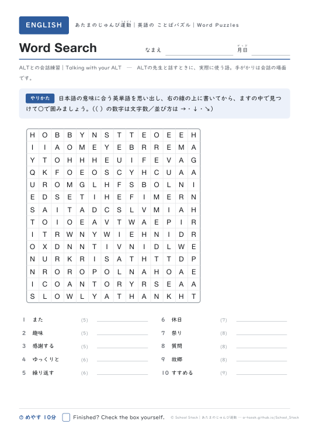

日本語版の「ことばあそびプリント」を、そのまま英語にした棚です。ますの中から単語をさがすWord Searchと、手がかりを読んでますをうめるCrosswordの2種類。小学校高学年から社会人・ALTとの会話練習まで9レベルあるので、同じ形式のまま学年をまたいで使えます。Crosswordには、太いわくの文字を集めてつくるBONUS WORDがついています。
単語・手がかりの文・ますの中身はすべて School Stock が自作したものです。市販の問題集・パズル誌の複製ではありません。レベル分けは学習指導要領やCEFRを参考にした目安で、検定教科書の配当そのものではありません。誤りに気づかれたら note から知らせてもらえると助かります。
9 レベルを表示中（1レベル＝Word Search と Crossword の2枚）
教科書で出会う語からスタート。小学校高学年と中1は手がかりが日本語、中2からは英語の短い1文になります。 4レベル×2種類




高1は基本語、高2は評論に出る抽象語、高3は難関入試レベル。手がかりは英語の定義文です。 3レベル×2種類



社会人向けのビジネス英語と、ALTの先生と実際に話すときに使う語。職員室の英語コーナーにも。 2レベル×2種類

Word Search 9レベルぜんぶ（PDF 18ページ） ／ Crossword 9レベルぜんぶ（PDF 18ページ） ／ 全18枚ぜんぶ（PDF 36ページ）
つくりは日本語版の「ことばあそびプリント」「あたまのじゅんび運動」と共通です（1枚1課題・得点欄なし・自分で丸つけ）。学校・家庭で自由に印刷して使えます。
どの語をどのレベルに置くかは、次の2つを重ねて決めています。①公立高校入試と共通テストで実際に使われた語の出現（分析はすべて手元で行い、問題文は一切転載していません）。②公開されている英語語彙リストの頻度順位と性格。単語・手がかりの文・ますの中身そのものは、すべて School Stock が新しく書いたものです。
語彙リストの出典：The New General Service List (NGSL), NGSL-Spoken, New Academic Word List (NAWL), Business Service List (BSL), TOEIC Service List (TSL) by Browne, C., Culligan, B. & Phillips, J. ── newgeneralservicelist.org（Creative Commons Attribution-ShareAlike 4.0 International）。本棚のレベル別語彙表は、これらのリストを参照して作成した二次的なリストであり、同じ CC BY-SA 4.0 のもとで利用できます。レベル分けは目安であり、検定教科書の配当そのものではありません。